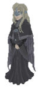

<main class="content" role="main">
  
  <div class="firekeeper">
    <div class="krasiviySpan"><span>Обоссыте его! Он уже ебнулся </span><span>{{counter}} </span><span>раз!</span>
    </div>
    </div>
  <app-artorias (vertuwka)="saltuxaListener()" [currentLocation]="title" class="artorias"></app-artorias>
</main>

